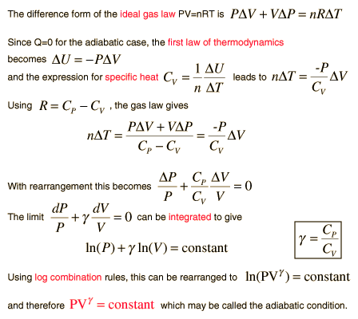

Development of the Adiabatic Condition

Since the adiabatic constant γ for a gas is the ratio of the specific heats as indicated above, it depends upon the effective number of degrees of freedom in the molecular motion. It can in fact be expressed as γ = (f+2)/f where f is the number of degrees of freedom in the molecular motion. For a monoatomic gas like helium, f=3 and γ = 5/3. For diatomic molecules like N2 and O2, you include two degrees of rotational freedom, so f=5 and γ = 1.4 . Since almost all of the atmosphere is nitrogen and oxygen, γ = 1.4 can be used for air in such calculations as the speed of sound. For polyatomic molecules, there are three degrees of rotational freedom and this along with the three translational degrees of freedom would give γ = 4/3. But in the specific heats of polyatomic molecules, there is evidence of contribution by vibrational degrees of freedom, and this would further reduce the value of γ.
|
Index
Heat engine concepts |